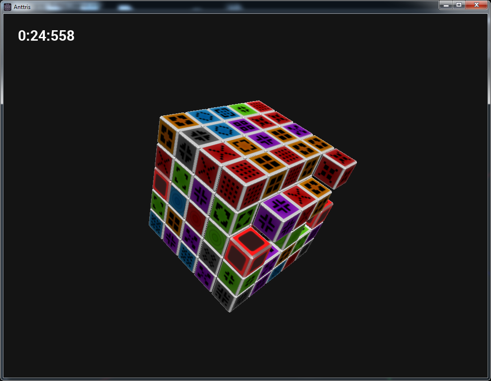
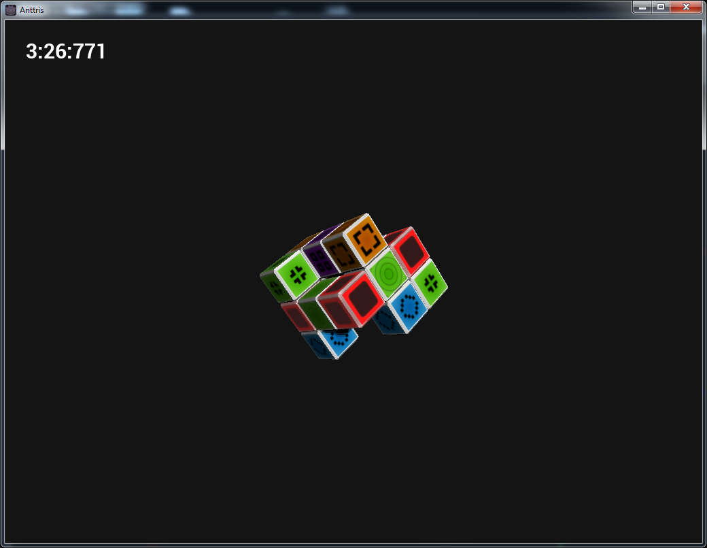

About Us
Who is Team5?
Team5 is a group of software engineers brought together by the software engineering project in New Mexico Institute of Mining and Technology's CSE 326 course. The result of this effort is the game Anttris. Anttris is a cross-platform game created as a project for our Software Engineering project. When considering what kind of game we should make, we considered small-but-fun puzzle games first. The hard part about puzzle games is making rules that are both challenging and fun!

Chris Aikman
I am a senior at New Mexico Institute of Mining and Technology, majoring in Computer Science.
Benji Cope
I am bobcope.
Skyler Manzanares
I am bobanerez.
Hugo Rivera
I am bobivera.
Sean Turner
I am bobturner.
Game Info
What is Anttris?
Anttris is a cross-platform puzzle solving game. Players work to match colored blocks and remove to reveal the center of the block. Once all blocks have been removed, the puzzle is solved and the game is won!
So what makes Anttris different from another Bejeweled™ clone? Where is the novelty? Where is the challenge? Anttris plays sort of like a mix of Mahjong™ and Bejeweled™, requiring players find the pre-matched paired blocks in order to remove them from the puzzle. Red blocks are always matched to red blocks, and blue to blue. Each block, however, only has one valid pair that must be sought and found. Once both blocks in the pair have been selected, the pair will be removed and the player can continue to try and work their way down to the center. Only one each outer layer of the cube has been removed can players begin to select blocks from the next layer.
Already we have a game that involved players frantically spinning around a cube and trying to find the pair for a block. Besides the regular pair blocks that must be removed, the block will also come with wild blocks. These blocks act like wild cards in card games, being able to be matched to any other block of the same color — for the large price of a cut of their current score!
Anttris was created with both single and multiplayer in mind. A fun, challenging puzzle can be played either alone or head-to-head with a friend! Players can even connect to other players on different devices!
What Devices Can I Run Anttris On?
Special care was taken to ensure that Anttris could be run on any device from a computer to a hand-held smartphone device. What's even cooler is that all multiplayer capabilities are available to you regardless of what device you're currently running on. This means you can play on your tablet while your friend plays on their PC and still go head to head!
Game Rules
Basic Concepts & Rules
In order to solve a puzzle in Anttris, players must clear away all blocks and reach the center block. To clear blocks, players match like-colored blocks together. The tricky part is that each colored paired block has exactly one other block it's paired with and can be cleared with. So even if there are lots of red blocks, each red block only has one other red block they can be matched against! A red block will never be matched to another color, like a blue block.
Blocks can only be paired and matched with other blocks from the same layer, meaning blocks on the very outside of the cube must be matched with other blocks that are also on the outside. As blocks are removed, players can only interact with blocks that are on the top-most layer. Only once all the blocks from the layer have been cleared can the player begin to remove blocks from beneath.
Lasers and Wild Blocks
In addition to the regular paired blocks, Anttris features special blocks called lasers and wild blocks. Any blocks between paired laser blocks are wild blocks.
Wild blocks work like wild cards in card games — a wild block can be paired with any other block on the current layer that is the same color. When paired blocks are paired with wild blocks, the block pair will be removed from the puzzle as if the player found the pair on their own.
Using the wild blocks can drastically decrease the time it takes to solve a puzzle. Be careful, though, as using wild blocks costs players a large penalty to their score! Any left over wild blocks when a layer is cleared are used to give the player a bonus to their score!
Score
When the game is over, the average time it took for all players to find each pair is calculated. Any wild block that a user used will subtract double that time from the total score. The highest score wins!
Download
Final version:
Multiplayer version (use this version to play competitive games):
Early release, these binaries contain many bugs and are incomplete
- Android APK you may need to enable Unknown Sources in Settings > Security
- 64 bit Linux binary remember to chmod +x
- Data pack please keep this in the same directory as the .exe/.bin/.zip
Screenshots
 Support
Game Bugs & Glitches
Having problems playing the game? Before submitting a bug report, please read over the Game Rules thoroughly and make sure you understand them. If you are still having trouble or have found a bug, you can contact us at our email.